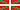

Arrikrutz-Oñatiko Kobak
Cueva de Oñati-Arrikrutz - Oñati-Arrikrutz Cave - Gesaltza-Arrikrutz Cave System
Useful Information
| Location: | Near Oñati, Aránzazu valley. From Motorway A-8, exit Maltzaga, follow Motorway AP-1 to Mondragón, then GI-627 to San Prudencio and GI-2630 to Oñati. (+42° 59' 47.41", -2° 25' 36.97") |
| Open: |
MAR to MAY Tue-Sun 10-14, 15-18. JUN to SEP Tue-Sun 10-14, 15-19. OCT Tue-Sun 10-14, 15-18. NOV to FEB Tue-Sun 10-14, 15-17. Holidays and school holidays Tue-Sun 10-14, 15-19. [2010] |
| Fee: |
Adults EUR 8, Children (5-10) EUR 6, Children (0-4) free, Seniors EUR 6. Groups (15+): Adults EUR 6, Children (5-10) EUR 4. [2010] |
| Classification: |
 Karst cave Karst cave |
| Light: | electric. |
| Dimension: | A=40m asl, L=14,000m, VR=500m, T=9°C. |
| Guided tours: |
L=1,000m, VR=55m, D=60min.
Languages:

|
| Photography: | |
| Accessibility: | |
| Bibliography: |
X Azkarate et al (2003):
Estudio climatico de la Galeria 53 de la Cueva de Arrikrutz,
Sisrtema Gesaltza - Arrikrutz - Jaturabe
[in] Karitza (11) 2002-2003 pp 4-15 |
| Address: |
Cueva de Oñati-Arrikrutz, 20560 Oñati, Tel: +34-943-082000.
E-mail: Oficina de Turismo de Oñati, Plaz de los Fueros, 20560 Oñati, Tel: +34-943-783453, Fax: +34-943-783069. E-mail: Agencia de Desarrollo y Turismo de Oñati, Tel: +34-943-780411. E-mail: |
| As far as we know this information was accurate when it was published (see years in brackets), but may have changed since then. Please check rates and details directly with the companies in question if you need more recent info. |
|
| Last update: | $Date: 2015/11/20 13:17:13 $ |
History
| 1900 | discovered. | |
| 1960 | beginb of exploration. | |
| 2003 | start of development. | |
| 08-JUN-2007 | opened to the public |
Description
The Arrikrutz is one of the first caves explored in the karst around Oñati. It is called simply Arrikrutz by the locals, while in literature the name Cueva de Arrikrutz (Arrikrutz Cave) seems to be more popular. We guess thats a matter if you say it in Euskadi (Basque) or in Catalan (Español or Spanish). Since the sixties numerous other caves, springs, potholes and dolines have been explored, and so today a complex connected system of passages is known, with a total length of 14km on six different levels. The cave is developed in late Jurassic and early Cretacious limestones and dolomites which were deposited between 154 and 96 Ma ago. This karst area south of the town Oñati is called Gesaltza.
Since the begin of exploration in 1960 numerous palaeontological findings made the cave famous. The highlight is the complete skeleton of a cave lion (Felis leo var. spelaea Golf.), the first one discovered in Spain. Beneath several bear bones, the remains of panthers were also found.
Today the part of the cave called Arrikutz is open to the public as a show cave. This cave is called Arrikrutz-Oñatiko Kobak (Euskadi), Cueva de Oñati-Arrikrutz (Catalan), or Oñati-Arrikrutz Cave (english), as it is part of the huge cave system.
Arrikrutz-Oñatiko Kobak is a very young show cave, opened in 2007.
There were numerous scientific studies carried out to evaluate the impact of the
development and the use as a show cave.
An ambitious part of the development was the installation of a highly advanced
computer guiding system.
The visitors are guided automatically in their respective language.
(


 )
)
- See also
 Search Google for "Arrikrutz Oñatiko Cave"
Search Google for "Arrikrutz Oñatiko Cave" Google Earth Placemark
Google Earth Placemark Oinati.org - Arrikrutz The Oñati Caves
Oinati.org - Arrikrutz The Oñati Caves- Cueva de Oñati-Arrikrutz, Asociación Cuevas Turísticas Españolas (A.C.T.E.)
(
 )
) - Gipuzkoa Tourism -
- Portal de Turismo del País Vasco - Turismo Euskadi
()
- Proyecto para la valoración del patrimonio histórico-natural del conjunto cárstico de Arantzazu-Arrikutz de O?ati
()
- Jesús Altuna (1967):
Hallazgo de un esqueleto de león de las cavernas en la Cueva de Aarrikrutz (Oñati),
Cronica de Historia Natural, Munibe 71: Sociedad de Ciencias Aranzadi, pp. 333-332.
()
online - Felix Ruiz de Arkaute, Juan San Martín ():
Conjunto de fenómenos espeleológicos de Gesaltza,Aarrikrutz, Jaturabe y Cueva de los Osos,
Munibe 88: Sociedad de Ciencias Aranzadi, pp. 10-28.
()
online